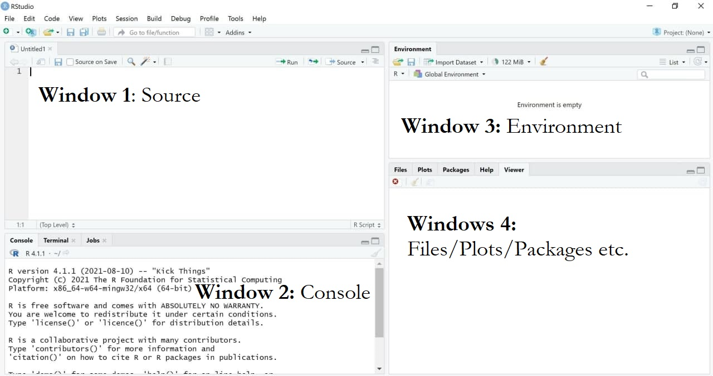
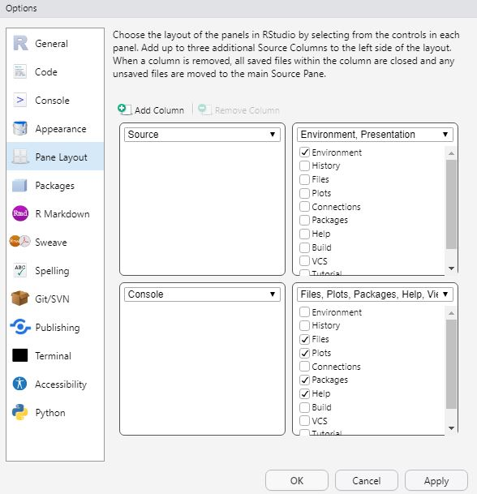
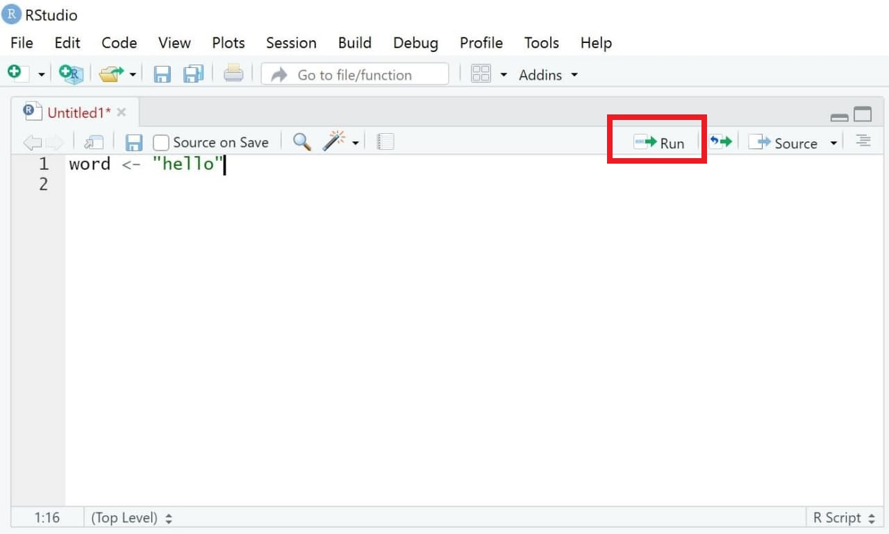
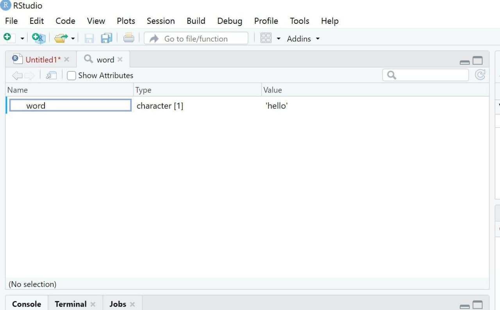

1 Tutorial: Installing & Understanding R/R Studio
After working through Tutorial 1, you’ll…
- know how to install R and R Studio
- know how to update R and R Studio
- understand the main set-up of R Studio
1.1 Installing R
R is the programming language we’ll use to import, edit, and analyze data. Please watch one of these two video tutorials before installing R yourself.
When you are ready to install R, use Cran to install the newest version of R (4.1.2, “Bird Hippie”). You’ll have to specify your operation system to download the right version:
1.2 Installing R Studio
Next, install R Studio. R Studio is a desktop application with a graphical interface that facilitates programming with R. The newest version of R Studio (1.4.1717) can be downloaded via this Link.
1.3 Updating R and R Studio
If you have already installed R and RStudio (for example, because you already needed it for a previous seminar), please update your version to the latest version. This way, we’ll all know that our versions are compatible.
1.3.1 On Windows
Updating on Windows is tricky. Therefore, you can use a package called installr, which helps you manage your update. First, install the installr package if you don’t have it. Use the following code:
# installing/loading the package:
if(!require(installr)) {
install.packages("installr");
require(installr)
} #load / install+load installrAfter you have installed or loaded the installr package, let’s start the updating process of your R installation. It will check for newer versions, and if one is available, will guide you through the decisions you’d need to make:
# using the package:
updateR()Finally, update R Studio. Updating RStudio is easy, just go to Help > Check for Updates to install a newer version.
1.3.2 On MAC
Go to CRAN and install the newer package intaller.
1.4 How does R work?
First things first: R is an object- and function-oriented programming language. Chambers (2014, p. 4) has nicely summarized what this means:
- Everything that exists is an object.
- Everything that happens is a function call.
We assign values (for instance, single numbers/letters, several numbers/letters, or whole data sets) to objects in R to work with them/do computations. For instance, the following command in R would assign the word “hello” to the object word by using the <- sign (a function used for assigning values to objects):
word <- "hello"Objects have specific properties that determine which types of calculations can be done with them (and which cannot). For instance, the object word is characterized by the fact that it consists of characters (i.e., a word) - which may, for instance, prohibit you to calculate the mean of this object (which is something only possible for objects consisting of numeric data).
This already hints towards the second, important aspect of R: It is influenced by functional programming, meaning that everything we do in R is a function call. R uses functions to assign specific values (for instance, a single number or word, several numbers or words, whole data sets) to objects. In short, what you will learn by learning programming in R is how to write functions for making R do the calculations you need.
Let’s take SPSS - which, I assume, many of you have worked with previously - as a comparison. If you import, edit, or analyze a data set in SPSS, you’ll use the click-and-point menu to change variable values, calculate variables’ means, or export data.
R works differently: You assign the data set to an object - for instance an object called “word”, as done previously. This assignment enables you to work with the data: You can now call specific functions to work with or change this object. For instance, if you want to add another word to the object word, for instance “and good morning”, you could do that by using a specific function called paste0(), which takes the original object word and adds your additional words ” and good morning” to overwrite the old object word:
word <- paste0(word, " and good morning")
word## [1] "hello and good morning"Different to using the click-and-point menu in SPSS, you thus need to write your own code to import, edit, or analyze any type of data in R. Luckily, R already includes a lot of predefined functions meaning that we do not have write all of these functions ourselves.
Ouch, that seems awfully complicated. Why should I use R?
There are several reasons why I’m an advocate of R (or similar programming languages such as Python) over programs such as SPSS.
R is free. Other than most other (statistical) programs, you do not need to buy it (or rely on an university license, that is likely to run out once you leave your department).
R is an open source program. Other than most other programs, the source code - i.e., the basis of the program - is freely available. So are the hundred of packages (we’ll get to those later - these are basically additional functions you may need for more specific analyses) on CRAN that you can use to extend R’s base functions.
R offers you flexibility. You can work with almost any type of data and rely on a large (!) set of functions to import, edit, or analyze such data. And if the function you need to do so hasn’t been implemented (or simply does not exist yet), you can write it yourself!
Learning R increases your chances on the job market. For many jobs (academia, market research, data science, data journalism), applicants should know at least one programming language.
1.5 How does R Studio work?
As mentioned, R studio is a graphical interface which facilitates programming with R. It contains up to four main windows, which allow for different things:
- Writing your own code (Window 1: Source). Important: When first installing R/R Studio and opening R studio, you may not see this window right away. In this case, simply open it by clicking on File/New File/R Script.
- Executing your own code (Window 2: Console)
- Inspecting objects (Window 3: Environment)
- Visualizing data, searching for help, updating packages etc. (Window 4: Files/Plots/Packages etc.)
| Image: Four main windows in R |
|  |
Please note that the specific set-up of your R Studio may look different (the order of windows may vary and so may the windows’ names). I have made the experience that having these four windows open works best for me. This may be different for you. If you want to modify the appearance of your R Studio, simply choose “Tools/Global Options/Pane Layout”.
| Image: Changing the Layout |
|  |
1.5.1 Source: Writing your own code
Using the window “Source”, you’ll write your own code to execute whichever task you want R to fulfill.
1.5.1.1 Writing Code
Let’s start with an easy example: Assume you simply want R to print the word “hello”. In this case, you would first write a simple command that assigns the word “hello” to an object called word. The assigment of values to named objects is done via either the operator “<-” or the operator “=”. The left side of that command contains the object that should be created; its right side the values that should be assigned to this object.
In short, this command tells R to assign the world “hello” to an object called word.
word <- "hello"| Image: “Source” |
 |
1.5.1.2 Annotating Code
Another helpful aspect of R is that you can comment your own code. Oftentimes, this is very helpful for understanding your code later (if you write several hundred lines of codes, you may not remember their exact meaning months later).
Comments or notes can be made via hashtags #. Anything following a hashtag will not be considered code by R but be ignored instead.
word <- "hello" #this line of code assigns the word "hello" to an object called word1.5.1.3 Executing Code
We now want to execute our code. Doing so is simple:
- Mark the parts of the code you want to run (for instance, single rows of code or blocks of code across several rows)
- Either press Run (see upper right side of the same window) or press Ctrl + Enter (On Mac OS X, hold the command key and press return instead).
R should now execute exactly those lines of codes that you marked (hereby creating the object word). If you haven’t marked any specific code, all lines of code will be executed.
| Image: Executing Code |
|  |
1.5.2 Console: Printing results
Results of executing code are printed in a second window called “Console”, which includes the code you ran and the object you may have called when doing so.
Previously, we defined an object called word, which consists of the single word “hello”. Thus, R prints our code as well as objects called when running this code (here, the object word) in the console.
word <- "hello"
word## [1] "hello"| Image: Window “Console” |
 |
1.5.3 Environment: Overview of objects
The third window is called “Environment”1. This windows displays all the objects currently existing - in our case, only the object “word”. As soon as you start creating more objects, this environment will fill up.
If you’re an SPSS user, this window is very similar to what is called the Datenansicht / Data overview in SPSS. However, the R version of this is much more flexible, given that our environment can contain several data sets, for example, at the same time.
| Image: Window “Environment” |
 |
It is important to know that we can visually inspect any object using the View() command (with a new tab then opening in the “Source” window). This isn’t super helpful right now - but if you work with bigger data sets with several observations/variables later on, it is often useful to inspect data visually.
View(word)| Image: Window “View” |
|  |
1.5.4 Plots/Help/Packages: Do everything else
Lastly, the standard R Studio interface contains a fourth window (if you opted for this layout). In my case, the window contains several sub-sections called “Files”, “Plots”, or “Packages” among others. You’ll understand their specific functions later - the window can, for instance, be used to plot/visualize results or see which packages are currently loaded.
| Image: Window “Files/Plots/Packages” |
 |
1.6 Take-Aways
- Window “Source”: used to write/execute code in R
- Window “Console”: used to return results of executed code
- Window “Environment”: used to inspect objects on which to use functions
- Window “Files/Plots/Packages etc.”: used for additional functions, for instance visualizations/searching for help/activating or updating packages
1.7 More tutorials on this
You still have questions? The following tutorials & papers can help you with that:
- YaRrr! The Pirate’s Guide to R by N.D.Phillips, Tutorial 2
- Computational Methods in der politischen Kommunikationsforschung by J. Unkel, Tutorial 1
- SICSS Boot Camp by C. Bail, Video 1
- wegweisR by M. Haim, Video 1
- R Cookbook by Long et al., Tutorial 1
Let’s keep going: [Tutorial 2: Workflow in R]
again, this only applies for the way I set up my R Studio. You can change this via “Tools/Global Options/Pane Layout”↩︎